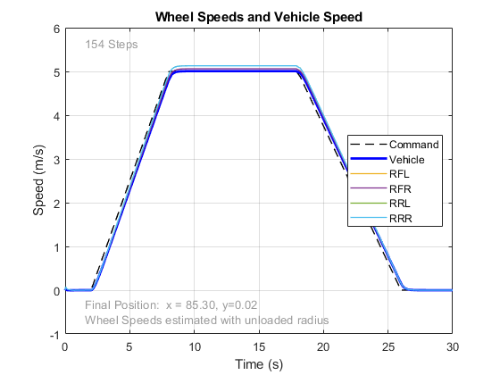
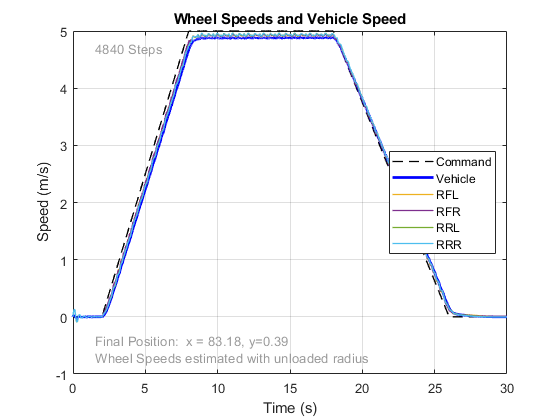

Motor Grader Rear Frame
This example models the rear frame of a motor grader. An abstract torque source drives the wheels.
(return to Motor Grader Design with Simscape Overview)
Contents
- Model
- Rear Frame Model
- Powertrain: Torque at Wheels
- Powertrain: Torque at Driveline
- Powertrain: Driveline
- Tire: Spherical
- Tire: Magic Formula
- Tire: Point Cloud
- Simulation Results: Spherical Tires
- Simulation Results: Magic Formula Tires
- Simulation Results: Point Cloud Tires, Cylinder
- Simulation Results: Point Cloud Tires, Outer Tread
- Simulation Results: Point Cloud Tires, Convex Hull
- Comparison of Results for Tire Models
- Simulation Results: Driveline
- Simulation Results: CVT Abstract
- Simulation Results: CVT Electrical
- Simulation Results: CVT Hydrostatic
- Simulation Results: CVT Power Split
- Comparison of Results for Powertrain Models
Model
Rear Frame Model
The rear frame models the inertia for the drive unit for the rear wheels, including the power source for the powertrain. The connection between the wheels and the powertrain are the 1D mechanical ports FL, FR, RL, and RR. The mechanical connection between the wheels, including the components such as differentials, is handled within the powertrain subsystem.

Powertrain: Torque at Wheels
The model below shows ideal torque sources that apply torque to each wheel. This abstract model does not attempt to capture powertrain behavior, it is a very simple model that simply acts to get the vehicle to travel at the target speed. Minimizing computation in the powertrain system lets the model run faster.
Powertrain: Torque at Driveline
The model below shows an ideal torque source that applies torque to the input shaft of the mechanical driveline. This abstract model assumes the engine and CVT perform as required and lets the investigation focus on the driveline and on the tire-ground interaction.
Powertrain: Driveline
The model below represents the mechanical connection between the output of the transmission and the four driven wheels. Differentials at the front and rear enable the engine to power both wheels and for those wheels to turn at different rates when the vehicle is in a turn. Compliance elements abstractly model shaft deflection in the driveline.
Tire: Spherical
This tire model uses the Spatial Contact Force block to model normal and friction forces between the tire and the ground. The geometry of the tire is abstractly represented as a sphere to minimize computation. A generic force law is used in the Spatial Contact Force block. Custom force laws can be integrated with this block where the block measures quantities such as relative location, velocity, and tangential velocity so that you can calculate the forces and torques on the wheel.

Tire: Magic Formula
This tire model uses the Magic Formula Tire Force and Torque block to model forces and torques acting between the tire and the ground. The geometry of the tire is abstractly represented as a ring in the central plane of the tire. The Magic Formula Tire equations are used to calculate the forces and torques. See also the Custom Tire Force and Torque block for custom tire models.
Tire: Point Cloud
This tire model uses the Spatial Contact Force block to model normal and friction forces between the tire and the ground. The geometry of the tire is represented as a point cloud which permits arbitrary tire profiles. A generic force law is used in the Spatial Contact Force block. Custom force laws can be integrated with this block where the block measures quantities such as relative location, velocity, and tangential velocity so that you can calculate the forces and torques on the wheel. The performance of this block depends heavily on the number and location of the points in the point cloud.
Simulation Results: Spherical Tires
The results below were generated by a simulation with a simple acceleration and deceleration. In this test, the Spatial Contact Force block with sphere geometry for the tire was used.
Simulation Results: Magic Formula Tires
The results below were generated by a simulation with a simple acceleration and deceleration. In this test, the Magic Formula Tire was used.
Simulation Results: Point Cloud Tires, Cylinder
The results below were generated by a simulation with a simple acceleration and deceleration. In this test, the Spatial Contact Force block with point cloud geometry for the tire was used. The point cloud distributes the points evenly on a cylinder whose surface is at a single fixed radius at the surface of the tire.
Simulation Results: Point Cloud Tires, Outer Tread
The results below were generated by a simulation with a simple acceleration and deceleration. In this test, the Spatial Contact Force block with point cloud geometry for the tire was used. The points in the point cloud were extracted from the CAD geometry for the tire and only includes points outside a specified radius.
Simulation Results: Point Cloud Tires, Convex Hull
The results below were generated by a simulation with a simple acceleration and deceleration. In this test, the Spatial Contact Force block with point cloud geometry for the tire was used. The points in the point cloud were extracted from the CAD geometry for the tire and only includes points on the surface of a convex hull for the tire.
Comparison of Results for Tire Models
This plot shows the speed of the front left wheel on the rear frame with each of the different tire models. The point cloud tires show oscillations in speed. The point cloud tires capture the rugged profile of the tire, and on hard surfaces these vibrations will be transmitted back through the driveline system.
Simulation Results: Driveline
The results below were generated by a simulation with a simple acceleration and deceleration. In this test, the Magic Formula Tire was used and the wheels are connected via a mechanical driveline with front and rear differentials.
Simulation Results: CVT Abstract
The results below were generated by a simulation with a simple acceleration and deceleration. In this test, the Magic Formula Tire was used and the wheels are connected via a mechanical driveline with front and rear differentials and powered by an engine via an abstract CVT.
Simulation Results: CVT Electrical
The results below were generated by a simulation with a simple acceleration and deceleration. In this test, the Magic Formula Tire was used and the wheels are connected via a mechanical driveline with front and rear differentials and powered by an engine via an electrical CVT.
Simulation Results: CVT Hydrostatic
The results below were generated by a simulation with a simple acceleration and deceleration. In this test, the Magic Formula Tire was used and the wheels are connected via a mechanical driveline with front and rear differentials and powered by an engine via an hydrostatic CVT.
Simulation Results: CVT Power Split
The results below were generated by a simulation with a simple acceleration and deceleration. In this test, the Magic Formula Tire was used and the wheels are connected via a mechanical driveline with front and rear differentials and powered by an engine via a power split hydromechanical CVT.
Comparison of Results for Powertrain Models
This plot shows the speed of the front left wheel on the rear frame with each of the different transmission models. The shift changes in the power-split transmission are visible, as are the responsiveness of the control system for each type of CVT.